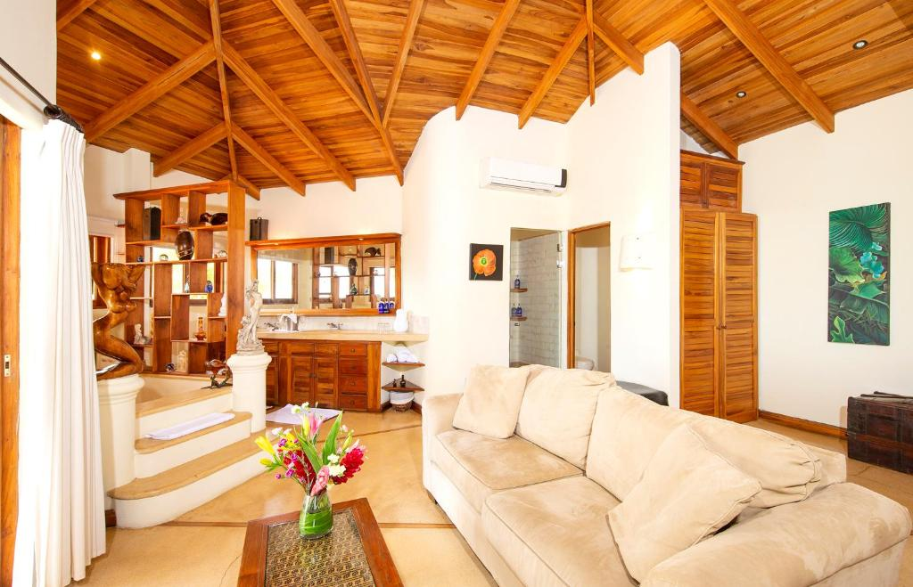
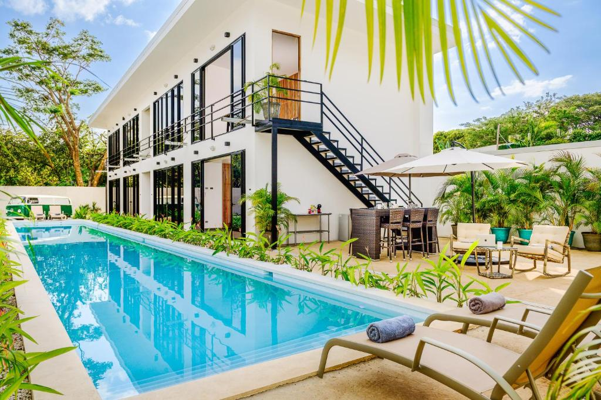
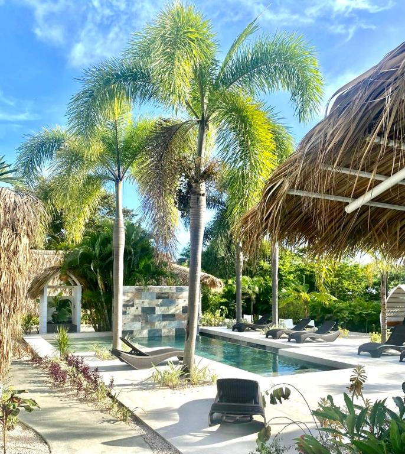
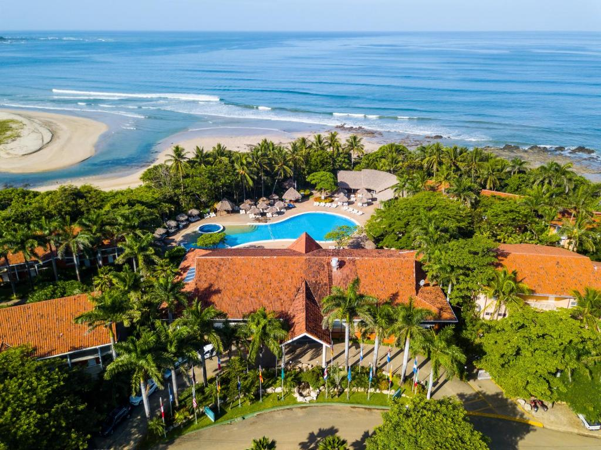
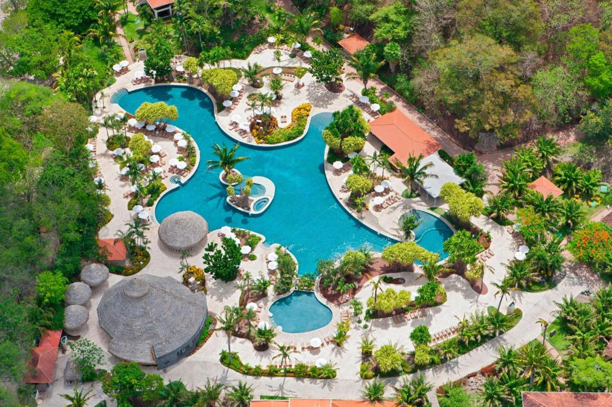

Tamarindo
Tamarindo is a district of the Santa Cruz canton, in the Guanacaste province of Costa Rica. It is a perfect place for surfing, sport fishing, scuba diving and sunbathing. If you want to spend your days here, you will find beautiful beach houses and luxury hotels next to the sunny beaches. You will find plenty of fantastic options for shopping or dining.
-

Los Altos de Eros
Offering an large swimming pool overlooking the Pacific Ocean, plus a spa and wellness centre, Los Altos de Eros is located 10 km from Playa Avellana beach, set on a hill side 20 minutes' drive outside Tamarindo. Free WiFi access is available in public areas.
Click to see more -

House of Nomad
House of Nomad - Adults only in Tamarindo has 4-star accommodation with a garden and a terrace. With an outdoor swimming pool, the 4-star hotel has air-conditioned rooms with free WiFi, each with a private bathroom. The property is allergy-free and is situated 500 m from Tamarindo Beach.
Click to see more -
 JW Marriott Guanacaste Resort & Spa
JW Marriott Guanacaste Resort & Spa
Live the essence of Costa Rican in a luxury hacienda style resort in Guanacaste. This resort & spa sits oceanfront and is surrounded by the beauty of Costa Rican rich biodiversity. This hotel is the closest international branded resort to Tamarindo.
Click to see more -

Les Voiles Blanches
Set in Tamarindo, Les Voiles Blanches - Luxury Lodge offers an outdoor swimming pool, garden and terrace. Free WiFi is available throughout the property and on-site free parking is provided.
Click to see more -

Occidental Tamarindo
Offering a beautiful setting on Playa Langosta Beach and next to Las Baulas National Park, Occidental Tamarindo features an outdoor swimming pool and spa.
Click to see more -
 The Oaks Tamarindo
The Oaks Tamarindo
The Oaks Tamarindo Pool Front Condominiums fast wifi is located 10 km from Tamarindo Beach and 5 minutes’ drive from Huacas Village. It features modern design, an extensive garden, sun terrace with swimming pool and free Wi-Fi.
Click to see more -

The Westin Reserva
This luxury all-inclusive resort and spa is set on Playa Conchal Beach in Costa Rica's North-Pacific Riviera, 15 minutes' drive from Tamarindo Beach. It offers a gym, tennis courts, outdoor pool and spa.
Click to see more -
Les Voiles Blanches
Set in Tamarindo, Les Voiles Blanches - Luxury Lodge offers an outdoor swimming pool, garden and terrace. Free WiFi is available throughout the property and on-site free parking is provided.
Click to see more -
 W Costa Rica Resort
W Costa Rica Resort
Set in Playa Conchal, W Costa Rica Resort Hotel has two outdoor swimming pools, fitness center and free WiFi. This 5-star hotel offers a 24-hour front desk. There are three different restaurants, offering from casual dining to seafood..
Click to see more